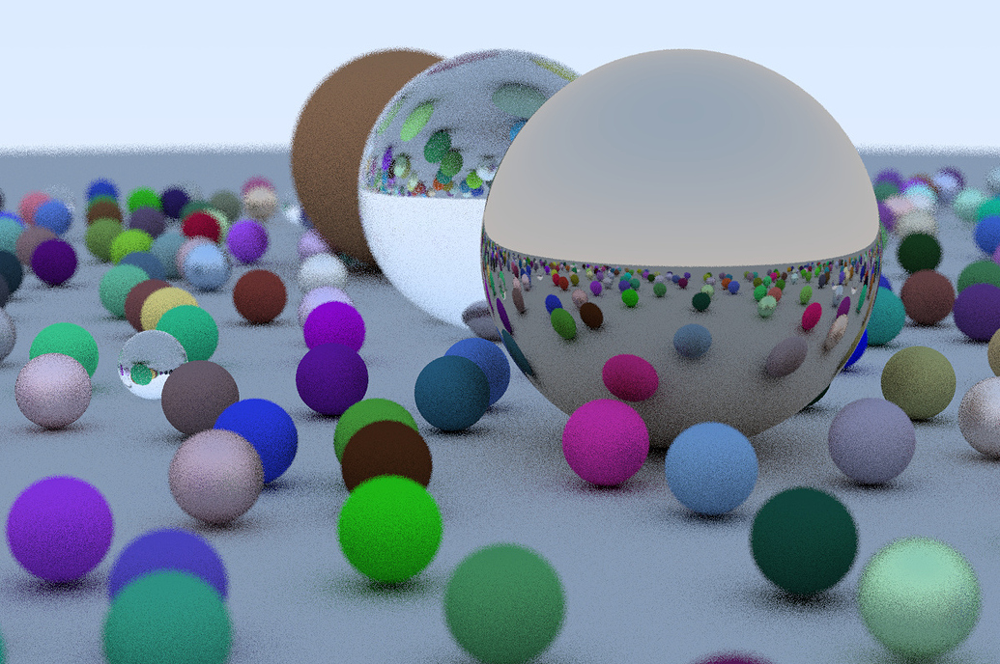
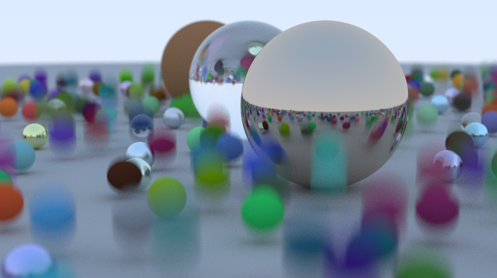

A list of my projects in graphics/physics programming!
Simulates a liquid/vapor phase change with temperature and chemical potential (substitute for pressure) using a Boltzmann distribution. For a temperature-only simulation, click here.
Incompressible fluid simulated by enforcing zero-divergence via Gauss-Seidel pressure projection (with overrelaxation), and adding semi-Lagrangian advection.
Efficiently finds and resolves object collisions with Morton code Bounding Box Hierachy implementation.
Its a triple pendulum.
Ray tracer with BVH acceleration and motion blur, based on Ray Tracing in One Weekend. Actively adding new features.


A collection of physics simulations implemented in Taichi, a high-performance programming language for scientific computing on the GPU.
Repository includes: SPH fluid simulation, Pool ball simulation, N-body simulation, spring simulation, tectonic plate generator, rocket launch simulation (very basic)